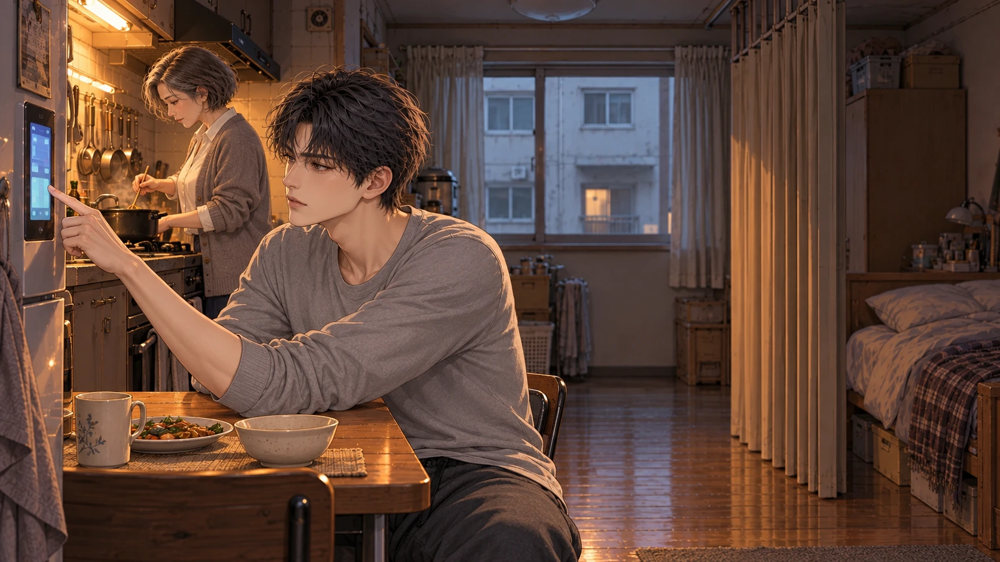
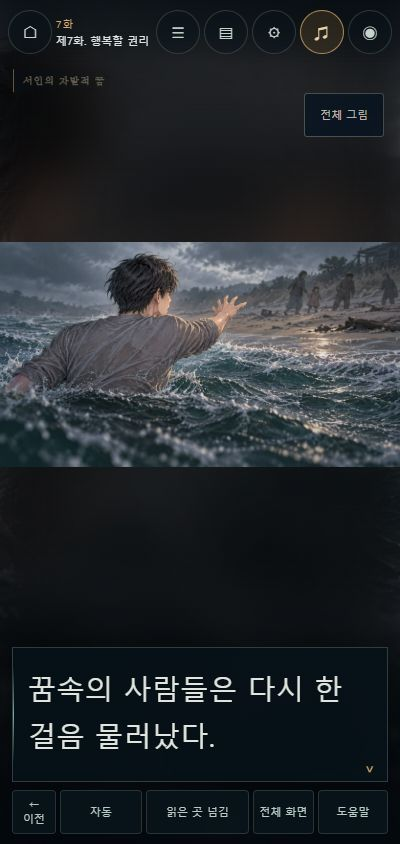
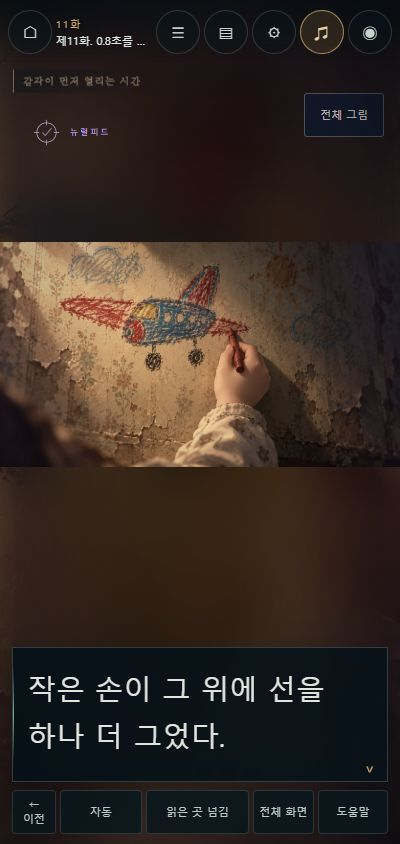
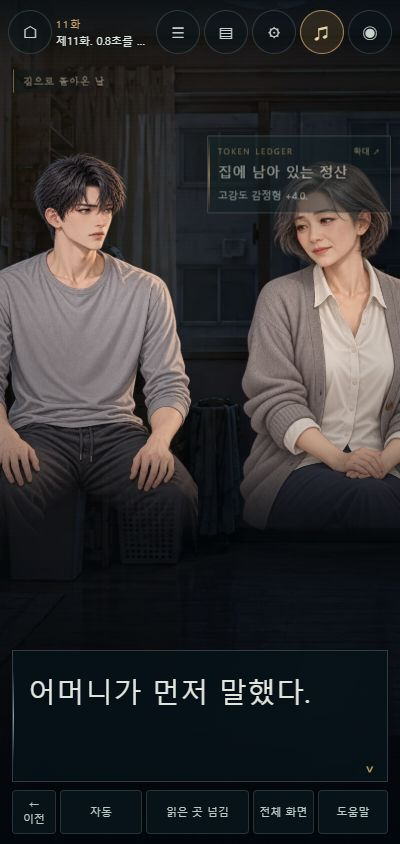

LOST DREAMS / CORE DEMO · 2026.10.21
핵심 데모는
11화까지.
AI가 읽지 못한 사람의 마음을 읽는 서인. 그 능력으로 앞으로 나아간 사람이, 더 빨리 판단하기 위해 무엇을 잃는지까지 체험하는 구간으로 정했습니다. 본편 11편과 정본 사이 이야기 7편을 순서대로 수록합니다.
여기서 멈추는 이유
4화: 이 사람만의 재미
시계로 향한 손, 뒤집은 메시지, 창밖으로 움직인 시선. 사람의 작은 행동이 실제 협상 결과를 바꾸는 순간까지 보여 줍니다. 관찰 기록에는 이미 읽은 단서만 차례로 쌓입니다.
11화: 첫 선택의 실제 대가
10화의 시술 결심에서 끝내면 비용은 아직 약속입니다. 11화에서 짧아진 응답, 불분명한 손의 동의, 어머니에게 묻지 않고 바꾸는 검진 날짜와 모노의 재인증까지 겪은 뒤 멈춥니다.
〈본인이 맞습니까?〉
11화의 질문. 끝은 다음 면담까지 남은 9시간 8분을 알립니다.
데모 종료 뒤에는 메뉴, 마지막 장면 다시 보기, 본편 12화로 이어 읽기를 제공합니다. 12화 이후는 기존 본편의 연출 범위로 이어집니다.
글의 사건이 그림에서 보이도록

| 구간 | 새 사건 그림 | 보여 주려는 행동 |
|---|---|---|
| 3화 | 컵과 출입증 | 둘 중 하나를 지우지 못한 선택. 방 안에 혼자 남은 시점으로 재수정. |
| 7화 | 거친 해변 | 서인이 내민 손에서 물러나는 사람들. 2화의 광고 해변과 구분. |
| 8-2화 | 인지 과부하 | 계속되는 판단과 무너진 몸, 저절로 열린 비상 창. |
| 10화 | 잠든 어머니 | 손을 뻗었다 멈추고 연결 표시를 끄지 않는 행동. |
| 11화 | 크레파스의 방 | 주인이 확정되지 않은 기억. 아이의 얼굴·정체를 새로 만들지 않음. |
| 11화 | 다시 잡힌 검진 | 3초 만에 날짜를 바꾸는 아들, 그 행동을 보지 못한 어머니. |
새 원화는 사건 그림 6장, 인물 그림 3장입니다. 기존 원화를 참조해 도윤의 경청 자세, 하경의 임상 복장과 시선, 시술 뒤 서인의 고요한 자세를 추가했습니다. 지우는 여성 원화 기준을 유지하고, 기존 1~2화 연출·티저·해변 최종 CG와 1~30화 사건 그림 35장을 보존했습니다.
실제 사용한 원화·참조·제작 기록. 선택하지 않은 후보는 게임에 연결하지 않았습니다.
소리와 독서의 호흡
자체 작곡 4곡, 공방·바다·임상실 공간음 3종, 손을 쥐는 소리와 점토 낙하 효과 2종을 새로 만들었습니다. 관계 장면, 관찰의 압박, 과부하와 시술 뒤의 불안에 각각 연결하고, 통신을 읽을 때는 음악을 낮춥니다. 협상의 기다림과 시술 끝에는 소리를 비웁니다.
11화의 “0.8초.”에는 실제 음향 공백을 넣었습니다. 음량·통신 초점이 갱신되어도 공백이 덮이지 않도록 수정했습니다. 독자가 바로 다음으로 넘기는 동작은 막지 않습니다. 음원 길이·음량·해시와 제작 방식.
같은 장소에서 이어지는 짧은 서술은 최대 세 문장·160자까지 한 화면으로 묶습니다. 대화, 통신, 컷신, 효과음, 침묵과 행동의 경계는 넘어 묶지 않습니다. 원문의 문장과 기존 저장 좌표를 유지합니다.
휴대폰에서도 사건 전체를



휴대폰 점검에서 해변의 상대 인물이 잘리고, 크레파스의 손을 감각 표시가 가리는 문제를 찾아 수정했습니다. 새 그림은 전체 구도를 우선 표시하며 ‘전체 그림’에서 세부 확대를 지원합니다. 관찰 표와 기존 도표가 겹치는 곳은 하나의 관찰 표로 정리했습니다.
자동 읽기, 이전, 읽은 곳 넘김, 지난 대사, 화면 숨김·복원, 글자 크기와 움직임 감소, 자동·수동 저장을 유지합니다. 데모와 본편은 읽던 곳을 따로 보관하며, 잘못된 판본의 백업을 가져오면 적용 전에 안내합니다. 세 곳의 선택형 관찰은 펼치지 않고 진행할 수 있습니다. 살펴본 항목은 판본별 공용 수첩에 남고, 저장 칸별 사건 선택과는 별도입니다.
확인한 범위
PC 1440×900에서 1~11화와 사이 이야기 7편을 처음부터 순서대로 조작했습니다. 3,342회의 화면 관찰 기록에서 원문 진행 단위 4,242개가 모두 확인됩니다. 모든 장 끝과 11화 종료에 도달했고 콘솔 경고·오류는 없었습니다. 모바일 400×844에서는 새 그림 6장과 인물 3종, 28px 읽기·움직임 감소·화면 숨김·수동 저장·관찰·확대를 확인했습니다.
재접속 후 완료 화면 복원, 마지막 장면 다시 보기, 본편 12화 연결, 자동 읽기 진행, 데모 백업의 실제 내보내기, 서로 다른 판본 가져오기 차단과 본편 위치 보존을 확인했습니다. 자동 검사는 97개가 통과했습니다. 단일 HTML판은 localhost에서 새 그림이 내장된 상태로 열어 데모와 본편 이동이 같은 파일 안에서 이어지는지 확인했습니다. 내려받은 파일을 file:// 주소로 직접 실행하는 검증은 이번에 수행하지 않았습니다.
빠른 순차 조작은 자연 속도로 읽은 감상 시간이나 사람의 청감 평가를 대신하지 않습니다. 성우 녹음과 최종 사운드 마스터링, 여러 실제 독자의 완주 반응까지 확인한 상업 출시 인증은 포함하지 않습니다.
화별 원문 범위 · 순차 조작 기록 · 전체 검사 결과 · 저장 구분 · 단일 HTML 이동
기준과 보존
작업 기준은 main da5040ea59aae3227b107b95c1b07b39305da560입니다. 마무리 때 올라온 7d042e200a006704f1f235ac6509ae264ff17d6d의 19~22화 개고·동기화도 보존해 통합했습니다. 해당 변경은 데모 본문을 바꾸지 않았습니다. 이번 작업은 원고·설정을 수정하지 않았고 128장 구성과 모든 본문 문장을 유지했습니다. 게임 자료에서는 10화 245~259번의 장소·등장 인물 정보를 잠든 어머니 곁으로 바로잡았습니다.
8화 뒤에는 ‘의결권 없음’ → ‘측정 상한’ → ‘환자 이름’ → 9화 순서로 읽습니다. 파일 ep008-1.md ‘열세 번째 사람’과 ep008-2.md ‘배신의 가격’은 작가가 숨김 처리한 구판이므로 포함하지 않습니다. 현재 게임의 8-1화 출처는 ep007-3.md입니다. 정본 결정 기록.